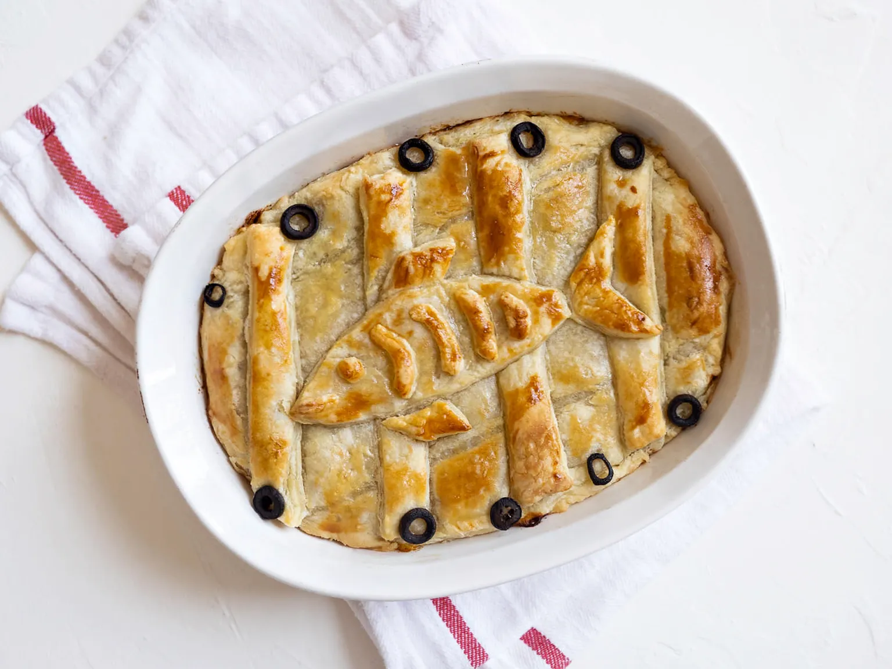

Herring and Pumpkin Pot Pie

Description
This recipe has always sounded weird but hey I'd try it.
Ingredients
- 1/2 kabocha
- 1/2 diced onion
- 1 tbsp olive oil
- 1 can herring
- 1-2 puff pastry sheets
- cut black olives
- salt & pepper
- shredded white cheese
Bechamel Sauce (White Sauce)
- 2 tbsp butter
- 2 tbsp flour
- 1/14 cup hot milk
- salt & pepper
Egg Wash
Instructions
- Scoop out the seeds from the kabocha
- Cut the kabocha into smaller pieces. Steam until softened.
- Remove the skin of the kabocha. Place kabocha pieces into a medium sized bowl.
- Finely chop the onion. In a medium pan, heat oil on medium. Cook the onions until translucent
- Add the onion to the kabocha and mix, while making sure to break up the kabocha well
Now make the bechamel sauce
- In a small saucepan, heat the butter on medium-low heat.
- Once melted, whisk in 2 tbsp flour until it bubbles
- Take your hot milk and pour it in and continue to whisk
- Add salt and pepper to taste and whisk until the sauce thickens
Back to the pot pie
- Add the bechamel sauce to the kabocha mixture in the bowl Mix well until creamy
- Add salt & pepper to taste
- Transfer the mixture to casserole dish
- Open up the canned herring and place on top of the kabocha mixture
- Place shredded white cheese or grate white cheese on top of the herring
- Prep a sheet of puff pastry dough. This can be pre-made or you can make it from scratch
- Place a thin sheet of puff pastry dough over to cover the casserole. You can cut it to fit the casserole or let it hang over the edges
- Using another sheet of puff pastry dough, cut out the fish design and place it on top of the casserole
- Mix your egg wash ingredients. Put egg wash onto the dough, being careful not to create any pools
- Place cut olives around the edge of the dish
- Preheat the oven to 375 degrees F. Bake the pot pie for 25-30 minutes